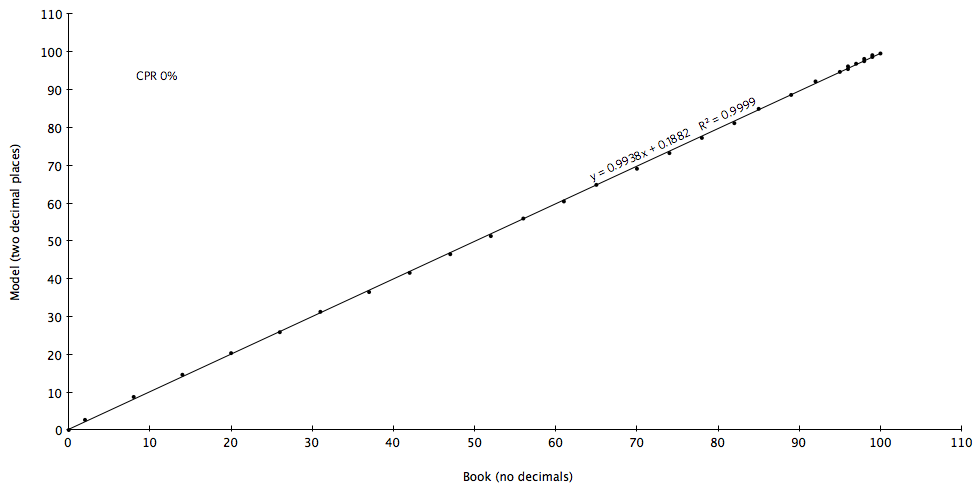

3 The Financial Cash Flow Model: Python on Wall Street
Keywords: fintec, data wrangling, Python
3.1 Case Description
After the financial crisis beginning in 2008, the Securities and Exchange Commission issued a proposed rulemaking in 2010 that asked whether it should require whether it should require
The asset-level information … according to proposed standards and in a tagged data format using eXtensible Markup Language (XML)… [and the] filing of a computer program of the contractual cash flow provisions expressed as downloadable source code in Python
in offerings of residential mortgage backed securities and other asset types. In the trade, the asset-level information is called the tape.
In my comment letter, I supported both requirements and provided a demonstration of how they would work based on an actual transaction.
3.2 XML Conversion
The asset data for this transaction was filed in HTML format in particularly ugly form in multiple tables.
</font></td>
</tr>
<tr bgcolor="white">
<td align="right" valign="top" width="3%">
<div style="DISPLAY: block; MARGIN-LEFT: 0pt; TEXT-INDENT: 0pt; MARGIN-RIGHT: 0pt" align="right"><font style="DISPLAY: inline; FONT-SIZE: 8pt; COLOR: #000000; FONT-FAMILY: times new roman"><font style="DISPLAY: inline; COLOR: #000000">6</font></font></div>
</td>
<td align="right" valign="top" width="7%">
<div style="DISPLAY: block; MARGIN-LEFT: 0pt; TEXT-INDENT: 0pt; MARGIN-RIGHT: 0pt" align="right"><font style="DISPLAY: inline; FONT-SIZE: 8pt; COLOR: #000000; FONT-FAMILY: times new roman"><font style="DISPLAY: inline; COLOR: #000000">1000115</font></font></div>
</td>
<td align="right" valign="top" width="7%">
<div style="DISPLAY: block; MARGIN-LEFT: 0pt; TEXT-INDENT: 0pt; MARGIN-RIGHT: 0pt" align="right"><font style="DISPLAY: inline; FONT-SIZE: 8pt; COLOR: #000000; FONT-FAMILY: times new roman"><font style="DISPLAY: inline; COLOR: #000000">0.0025</font></font></div>
</td>
<td valign="top" width="5%"><font style="DISPLAY: inline; FONT-SIZE: 8pt; FONT-FAMILY: times new roman"> 
</font></td>
<td valign="top" width="5%"><font style="DISPLAY: inline; FONT-SIZE: 8pt; FONT-FAMILY: times new roman"> 
</font></td>
<td align="right" valign="top" width="5%">
<div style="DISPLAY: block; MARGIN-LEFT: 0pt; TEXT-INDENT: 0pt; MARGIN-RIGHT: 0pt" align="right"><font style="DISPLAY: inline; FONT-SIZE: 8pt; COLOR: #000000; FONT-FAMILY: times new roman"><font style="DISPLAY: inline; COLOR: #000000">1000115</font></font></div>
</td>
<td valign="top" width="5%"><font style="DISPLAY: inline; FONT-SIZE: 8pt; FONT-FAMILY: times new roman"> 
</font></td>
<td align="right" valign="top" width="5%">
<div style="DISPLAY: block; MARGIN-LEFT: 0pt; TEXT-INDENT: 0pt; MARGIN-RIGHT: 0pt" align="right"><font style="DISPLAY: inline; FONT-SIZE: 8pt; COLOR: #000000; FONT-FAMILY: times new roman"><font style="DISPLAY: inline; COLOR: #000000">5264358737</font></font></div>
</td>
<td align="right" valign="top" width="5%">
<div style="DISPLAY: block; MARGIN-LEFT: 0pt; TEXT-INDENT: 0pt; MARGIN-RIGHT: 0pt" align="right"><font style="DISPLAY: inline; FONT-SIZE: 8pt; COLOR: #000000; FONT-FAMILY: times new roman"><font style="DISPLAY: inline; COLOR: #000000">2</font></font></div>
</td>
<td align="right" valign="top" width="5%">
<div style="DISPLAY: block; MARGIN-LEFT: 0pt; TEXT-INDENT: 0pt; MARGIN-RIGHT: 0pt" align="right"><font style="DISPLAY: inline; FONT-SIZE: 8pt; COLOR: #000000; FONT-FAMILY: times new roman"><font style="DISPLAY: inline; COLOR: #000000">1</font></font></div>Printed out, this is about 12 pages, depending on your printer. If you assigned a conscientious junior lawyer to perform a count, he or she would report back that there are approximately 2,843 lines, 34,524 words and 195,652 characters visible. (Junior lawyers, by and large have a limited understanding of the word approximate.) If, however, you asked your IT person the same question, you would learn that there are exactly 137,811 lines, 56,881 words and 2,689,760 characters. Why did the lawyer only pick up a little more than 7% of the bytes?
They are both right from their perspectives of what the eye can see and what the computer has to process. The difference is that vast proportions of the file containing the data is devoted to making it appear as if it were printed. That’s fine if what you plan to do is read. If you want to perform data crunching, however, say to run your own model on the tape, you have to get rid of a lot of crud before you can proceed.
Here’s the typical payload of one of the HTML blocks:
9
1000115
0.0025
1000115
1332854261
2
1
0
9We would prefer, of course, a comma delimited file
2,1000115,0.0025,NULL,1000115,,NULL,6875009669,2,1,0,9,,NULL,NULL,NULL,1,4,0.00,NULL,NULL,,242000,NULL,2009-05-26,623700,0.04500,240,,360,2009-07-01,NULL,120,NULL,,552900.71,552900.71,0.04500,2073.38,2010-04-01,,NULL,39,45,0.02250,NULL,0.00125,,60,0.05000,0.02250,12,0.02000,0.02000,0.09500,0.0225,0,NULL,,60,12,NULL,NULL,,0,NULL,NULL,0,NULL,NULL,0,,0,NULL,7.70,4.70,5.00,NULL,,NULL,NULL,NULL,722,778,NULL,,NULL,NULL,NULL,,NULL,770000000000,NULL,12500,0.00,9422.3,0.00,12500,21922.3,,1,5,NULL,3,NULL,4,,NULL,184669.53,NULL,0.23310,4,NULL,WILMETTE,IL,60091,1,1,,NULL,1500000,NULL,NULL,,NULL,NULL,NULL,0.57710,0.41580,0.00,0,0,NULL,,NULL,0.23310,NULL,NULL,,NULL,NULL,NULL,NULL,Full,Doc,less,than,12,months,,1,125.54,8.00,11.00,225939,2039-06-01, 3,1000115,0.0025,NULL,1000115XML is potentially a large improvement over HTML. It does one thing very well, which is to separate content from decoration. All of the decisions about font, size, color,alignment, etc., can be isolated to a separate file, called a stylesheet. Here is an XML file of the tape with a minimalist style rendering.
There is, however, a rub. To allow the ability to decorate the content, the designers of XML require, in effect, a new header for every row of data. So, the first of the 255 rows in the XML version looks like:
<record>
<field name="id">1</field>
<field name="servicer">1000115</field>
<field name="sfpct">0.002500</field>
<field name="sfamt">0.00</field>
<field name="adv">0</field>
<field name="orig">1000115</field>
<field name="lg">NULL</field>
<field name="lnum">2147483647</field>
<field name="amtype">2</field>
<field name="lienpos">1</field>
<field name="heloc">0</field>
<field name="purpose">9</field>
<field name="cashoutamt">0.00</field>
<field name="points">0.000</field>
<field name="chcl">0</field>
<field name="relo">0</field>
<field name="broker">0</field>
<field name="channel">1</field>
<field name="escrecord">0</field>
<field name="balsenior">0.00</field>
<field name="ltypesr">0</field>
<field name="hybridper">0</field>
<field name="negamlmtsr">0.0000</field>
<field name="jrbal">0.00</field>
<field name="odatesenior">0000-00-00</field>
<field name="odate">2009-06-23</field>
<field name="obal">446000.00</field>
<field name="oint">0.0475</field>
<field name="oterm">240</field>
<field name="ottm">360</field>
<field name="fpd">2009-08-01</field>
<field name="inttype">0</field>
<field name="intonlyterm">120</field>
<field name="bdownper">0</field>
<field name="helocper">0</field>
<field name="cbal">446000.00</field>
<field name="sbal">446000.00</field>
<field name="cintpct">0.0475</field>
<field name="cintamt">1765.42</field>
<field name="ptd">2010-03-01</field>
<field name="cstatus">0</field>
<field name="indextype">39</field>
<field name="lookdays">45</field>
<field name="gmargin">0.0225</field>
<field name="rounded">0</field>
<field name="roundfac">0.0012</field>
<field name="ofixper">60</field>
<field name="ocapup">0.0500</field>
<field name="ocapdn">0.0250</field>
<field name="resetper">12</field>
<field name="capup">0.0200</field>
<field name="capdn">0.0200</field>
<field name="ceiling">0.0975</field>
<field name="floor">0.0225</field>
<field name="negammax">0.0000</field>
<field name="orecast">0</field>
<field name="recast">0</field>
<field name="ofixedpay">60</field>
<field name="spayreset">12</field>
<field name="opercap">0.0000</field>
<field name="percap">0.0000</field>
<field name="opayreset">0</field>
<field name="payreset">0</field>
<field name="optionarm">0</field>
<field name="optionrecast">0</field>
<field name="ominpay">0.00</field>
<field name="minpay">0.00</field>
<field name="prepaycalc">0</field>
<field name="prepaytype">0</field>
<field name="prepayterm">0</field>
<field name="prepayhard">0</field>
<field name="pid">0</field>
<field name="propnum">0</field>
<field name="borrecorders">0</field>
<field name="selfemp">0</field>
<field name="comonpay">0.00</field>
<field name="pempl">36.00</field>
<field name="sempl">0.00</field>
<field name="yearshome">8.00</field>
<field name="ficomodel">0</field>
<field name="ficodate">0000-00-00</field>
<field name="pequifax">0</field>
<field name="pexperian">0</field>
<field name="ptransu">0</field>
<field name="sequifax">0</field>
<field name="sexperian">0</field>
<field name="stranstransu">0</field>
<field name="pofico">802</field>
<field name="prfico">806</field>
<field name="srfico">0</field>
<field name="cficometh">0</field>
<field name="pvant">0</field>
<field name="svant">0</field>
<field name="cvantmeth">0</field>
<field name="vantdate">0000-00-00</field>
<field name="longtrade">NULL</field>
<field name="maxtrade">0.00</field>
<field name="numtrade">0</field>
<field name="tradeuse">0.00</field>
<field name="payhist">770000000000</field>
<field name="monbk">0</field>
<field name="monfc">0</field>
<field name="pwage">8750.00</field>
<field name="swage">0.00</field>
<field name="pothinc">24883.57</field>
<field name="sothinc">0.00</field>
<field name="allwage">8750.00</field>
<field name="alltot">33633.57</field>
<field name="t_4506">1</field>
<field name="pincver">5</field>
<field name="sincver">0</field>
<field name="pempver">3</field>
<field name="sempver">0</field>
<field name="pastver">4</field>
<field name="sastver">0</field>
<field name="liquid">250000.00</field>
<field name="mondebt">0.00</field>
<field name="odti">0.11</field>
<field name="fullindex">4</field>
<field name="ownfundsdown">0.00</field>
<field name="city">CLARKSTON</field>
<field name="state">MI</field>
<field name="zip">48348</field>
<field name="ptype">1</field>
<field name="occ">1</field>
<field name="price">0.00</field>
<field name="oappr">575000.00</field>
<field name="ovaltype">0</field>
<field name="ovaldate">0000-00-00</field>
<field name="oavm">0</field>
<field name="oavmscore">0.0000</field>
<field name="rpval">0.00</field>
<field name="rpvaltype">0</field>
<field name="rpvaldate">0000-00-00</field>
<field name="ravm">0</field>
<field name="ravmscore">0.0000</field>
<field name="ocltv">0.78</field>
<field name="oltv">0.78</field>
<field name="opledge">0.00</field>
<field name="micomp">0</field>
<field name="mipct">0.00</field>
<field name="poolcomp">0</field>
<field name="stoploss">0.0000</field>
<field name="micert">NULL</field>
<field name="rdtifront">0.11</field>
<field name="rdtibback">0.00</field>
<field name="modpaydate">0000-00-00</field>
<field name="totcap">0.00</field>
<field name="totdef">0.00</field>
<field name="premodint">0.00</field>
<field name="premodpi">0.00</field>
<field name="premodoicap">0.00</field>
<field name="premodsubicap">0.00</field>
<field name="premodnxtdate">0000-00-00</field>
<field name="premodioterm">0</field>
<field name="fbal">0.00</field>
<field name="fint">0.00</field>
<field name="doccode">Citiquik process</field>
<field name="rwtinc">less than 12 months</field>
<field name="rwtast">1</field>
<field name="cashatclose">1048.73</field>
<field name="pyrind">36.00</field>
<field name="syrind">0.00</field>
<field name="jrdrawn">0.00</field>
<field name="maturity">2039-07-01</field>
</record>
and every following row, except for the few bytes devoted to data, looks the same, bulking the tape up almost to the size of the HTML version.
3.3 From XML to Plain Text
The good news is that a few lines of Python is sufficient to make the HTML-XML conversion. The next step is to set up a template:
<xsl:stylesheet version="1.0" xmlns:xsl="http://www.w3.org/1999/XSL/Transform">
<xsl:template match="/">
<HTML>
<BODY>
<xsl:apply-templates/>
</BODY>
</HTML>
</xsl:template>
<xsl:template match="/*">
<TABLE BORDER="0">
<TR>
<xsl:for-each select="*[position() = 1]/*">
<TD>
<xsl:value-of select="local-name()"/>
</TD>
</xsl:for-each>
</TR>
<xsl:apply-templates/>
</TABLE>
</xsl:template>
<xsl:template match="/*/*">
<TR>
<xsl:apply-templates/>
</TR>
</xsl:template>
<xsl:template match="/*/*/*">
<TD>
<xsl:value-of select="."/>
</TD>
</xsl:template>
</xsl:stylesheet>to apply to the conversion, using
import amara # package for parsing xml
doc = amara.parse("xmlsample.xhtml") #URL
sequoia = doc.xml_children[1] # skip 0th item, just a header
records = sequoia.xml_children
exemplar = records[1] # skip newline
fields = exemplar.xml_children
elements = fields[1] #skip newline
rec_id = elements.xml_children
loan_id = int(rec_id[0].xml_value.encode('us-ascii'))
loan_id
1To recap progress to date, we can pull XML data directly from a web page, parse it into a list of loan level records, and identify and exclude by copy the blank and constant fields. We ended up with a list that has 255 sublists, one for each loan. What can we do with the list?
Since we want to preserve loan identity (we may care which FICO goes with which zipcode), we can’t just use one dictionary to hold everything. Instead, we will give each record its own dictionary, d1, d2, … d255.
Next, we lazily generate the statements needed to create them by a little statement to print out the short commands, then cutting and pasting back to actually run them. If we had more than a couple of hundred records, we’d need to find a more elegant way of doing this, but this is a down-and-dirty way that’s easy to follow.
from collections import defaultdict
for record in range(256):
print ("%s = defaultdict(list)") % ('d'+str(record))
d1 = defaultdict(list)
d2 = defaultdict(list)
#...
d255 = defaultdict(list)This gives up 255 blank dictionary objects which we will assemble in a list:
websters = [d1, d2, ..., d255]Then it is a simple matter to pair up empty dictionaries with the revised list of records:
z = zip(websters,LR)
for entries in z:
for pairs in entries[1]:
entries[0][pairs[0]].append(pairs[1])and we now have a set of populated dictionaries with which we can do useful work.
3.4 Proof of Concept, Summary FICO Statistics
fico = flatten([entry['prfico'] for entry in websters])
mean(fico)
771.6313725490196
min(fico)
701
max(fico)
815
median(fico)
777.0
std(fico)
23.592234433539552
#Poor man's distribution graph of the unweighted scores
print stemplot(data0)
70 | 1 1 7 8 9 9
71 | 6 7 7 8 9
72 | 1 4 6 8
73 | 0 2 2 2 4 4 4 5 6 7 8 9 9
74 | 0 0 1 1 2 2 2 3 4 4 4 6 6 6 7 9
75 | 0 1 2 3 3 3 3 3 4 5 5 5 5 6 6 6 7 7 7 8 8 8 9
76 | 1 1 1 1 2 2 2 3 3 3 3 3 3 4 4 5 5 6 6 7 7 8 8 8 8 8 9 9 9
77 | 0 0 0 0 0 1 1 1 1 1 1 1 1 1 2 2 2 2 3 3 4 4 4 5 5 5 5 5 6 6 6 7 7 7 7 7 7 7 8 8 8 8 8 8 9 9 9 9
78 | 0 0 0 0 0 0 0 1 1 1 1 1 1 2 2 2 2 2 3 3 3 4 4 4 4 5 5 5 5 5 5 5 6 6 6 6 7 7 7 7 8 8 8 8 8 8 8 8 9 9 9 9 9
79 | 0 0 0 0 1 1 1 1 1 1 1 3 3 3 3 3 4 4 5 5 5 5 5 5 6 6 6 7 7 7 8 8 9 9 9
80 | 0 1 1 1 1 2 2 2 2 3 3 3 4 5 6 6 7 8 9 9
81 | 0 3 5This is a stem and leaf plot, which is quite useful. For the top line, read 701, 701, 707, 708, 799, 799, for example. It’s useful as a quick check on barbell distributions of credit scores.
3.5 The Cash Flow Model
The purpose of the next program is to replicate the results of pages S-84 and S-85 in the actual transaction. The trade name for these tables is decrement table and they show for each class of security when it will be retired, given certain assumptions.
"""
demonstration.py
Created on 2010-07-07
Python 2.6
"""
# Obtain various standard helper functions and classes
from __future__ import division # needs to be first line
import sys
import os
import plac
import urllib2
from collections import defaultdict
from datetime import date
from datetime import datetime
from dateutil.relativedelta import *
from lxml import etree
from StringIO import StringIO
help_message = '''
demonstration: calculate a decrement table for Sequoia 2010-H1 at a constant
prepayment rate assumption modified so that each loan that prepays does so
in full, rather than a curtailment.
Usage: python ./demonstration.py cpr where cpr is a decimal fraction between
0.01 and 1.00, inclusive
'''
'''Constants, from Sequoia Mortgage Trust 2010-H1 (http://goo.gl/I9Wi)'''
dealname = 'Sequoia 2010-H1'
bond = 'Class A-1'
replinefile = 'dectable.csv'
margin = 2.25 # identical for each loan
index = 0.9410 # assumed constant per 'modelling assumptions'
expfee = 0.2585 # servicing and trustee fees
reset = margin + index - expfee # interest rate calcuation on adjustment
# dates
pbal = 237838333.0 # initial aggregate principal balance of the loans
obal = 222378000.0 # initial aggregate principal balance of the Class A-1
srpct = obal/pbal # initial Senior Principal Percentage
cod = date(2010,5,1)# cut-off date
close_month = cod - relativedelta(months=1)
anniversary_month = (cod - relativedelta(months=1)).strftime('%B')
'''stepdown dates'''
stepdown = dict(
stepone = [date(2017,5,1), 1.0],
steptwo = [date(2018,5,1), 0.7],
stepthree = [date(2019,5,1), 0.6],
stepfour = [date(2020,5,1), 0.4],
stepfive = [date(2021,5,1), 0.2]
)
tttdate = date(2013,5,1) # two times test date
num_replines = 16
num_loans = 255
speeds = [0, 0.1, 0.2, 0.3, 0.4, 0.5]
url='xmlsample.xhtml' #XML file of loans
#
def generateItems(seq):
for item in seq:
yield item
def md(lexicon,key, contents):
"""Generic append key, contents to lexicon"""
lexicon.setdefault(key,[]).append(contents)
class Solver(object):
'''takes a function, named arg value (opt.) and returns a Solver object
http://code.activestate.com/recipes/303396/'''
def __init__(self,f,**args):
self._f=f
self._args={}
# see important note on order of operations in __setattr__ below.
for arg in f.func_code.co_varnames[0:f.func_code.co_argcount]:
self._args[arg]=None
self._setargs(**args)
def __repr__(self):
argstring=','.join(['%s=%s' % (arg,str(value)) for (arg,value) in
self._args.items()])
if argstring:
return 'Solver(%s,%s)' % (self._f.func_code.co_name, argstring)
else:
return 'Solver(%s)' % self._f.func_code.co_name
def __getattr__(self,name):
'''used to extract function argument values'''
self._args[name]
return self._solve_for(name)
def __setattr__(self,name,value):
'''sets function argument values'''
# Note - once self._args is created, no new attributes can
# be added to self.__dict__. This is a good thing as it throws
# an exception if you try to assign to an arg which is inappropriate
# for the function in the solver.
if self.__dict__.has_key('_args'):
if name in self._args:
self._args[name]=value
else:
raise KeyError, name
else:
object.__setattr__(self,name,value)
def _setargs(self,**args):
'''sets values of function arguments'''
for arg in args:
self._args[arg] # raise exception if arg not in _args
setattr(self,arg,args[arg])
def _solve_for(self,arg):
'''Newton's method solver'''
TOL=0.0000001 # tolerance
ITERLIMIT=1000 # iteration limit
CLOSE_RUNS=10 # after getting close, do more passes
args=self._args
if self._args[arg]:
x0=self._args[arg]
else:
x0=1
if x0==0:
x1=1
else:
x1=x0*1.1
def f(x):
'''function to solve'''
args[arg]=x
return self._f(**args)
fx0=f(x0)
n=0
while 1: # Newton's method loop here
fx1 = f(x1)
if fx1==0 or x1==x0: # managed to nail it exactly
break
if abs(fx1-fx0)<TOL: # very close
close_flag=True
if CLOSE_RUNS==0: # been close several times
break
else:
CLOSE_RUNS-=1 # try some more
else:
close_flag=False
if n>ITERLIMIT:
print "Failed to converge; exceeded iteration limit"
break
slope=(fx1-fx0)/(x1-x0)
if slope==0:
if close_flag: # we're close but have zero slope, finish
break
else:
print 'Zero slope and not close enough to solution'
break
x2=x0-fx0/slope # New 'x1'
fx0 = fx1
x0=x1
x1=x2
n+=1
self._args[arg]=x1
return x1
def tvm(pv,fv,pmt,n,i):
'''equation for time value of money'''
i=i/100
tmp=(1+i)**n
return pv*tmp+pmt/i*(tmp-1)-fv
## end of http://code.activestate.com/recipes/303396/ }}}
class Payoff():
'''prepares a decrement table given constant prepayment speed'''
def __init__(self, L, C):
self.L = L
self.C = C
self.bbal = float(L[0]) #beginning balance
self.rbal = self.bbal #remaining balance
self.i = float(L[1]) #interest rate in form 4.5
self.rtm = int(L[2]) #remaining months to maturity
self.mtr = int(L[3])+1 #months to roll date new i in effect
self.mta = int(L[4]) #months remaining of interest only
self.cod = C[0] #cut-off date
self.tttdate = C[1] #twotimes test date
self.srpct = C[2] #initial senior percentage
self.osrpct = C[2] #original senior percentage
self.reset = C[3] #interest rate at reset
self.stepdown = C[4] #stepdown dates
self.pbal = C[5] #original aggregate principal balance
self.obal = C[6] #original aggregate class balance
self.obsupct = 1 - C[2] #original subordinate percentage
s = Solver(tvm,pv=self.bbal, fv=0, i = self.i/12, n = self.rtm)
self.pmt = s.pmt #monthly payment
self.teaser = self.mtr #counter for initial fixed rate period
self.io = self.mta #counter for remaining interest only
self.n = self.rtm+1 #to take into account range()
self.current = self.cod + relativedelta(months=+1)
self.smm = 0.0 #single monthly mortality
def __nonzero__(self):
return True
def __bool__(self):
return False
def payone(self):
def is_twice(): #Twotimes test
if self.subprct >= 2*self.osubpct:
return 1
else:
return 0
def is_shrinking():
if self.srpct > self.osrpct:
return 1
else:
return 0
def payoff():
import random #import standard randomization module
space = int(1//self.smm) #calculate sample space
outcomes = [1] #create list with one positive outcome
for n in range(space-1): #for the remainder of the sample space
outcomes.append(0) #populate with negative outcome
payoff = random.choice(outcomes)#randomly choose an outcome
return payoff #report result to calling function
def senior_prepay_percentage():
if self.current < self.tttdate and is_twice:
self.srpppct = self.srpct + 0.5*(1-self.srpct)
elif self.current >= self.tttdate and is_twice:
self.srpppct = self.srpct
elif self.current < self.stepdown['stepone'][0]:
if is_shrinking():
self.srpppct = 1.0
elif is_twice():
self.srpppct = self.stepdown['stepone'][1]
else:
self.srpppct = self.srpppct
elif self.current < self.stepdown['steptwo'][0]:
if is_shrinking():
self.srpppct = 1.0
elif is_twice():
self.srpppct = self.stepdown['steptwo'][1]
else:
self.srpppct = self.srpppct
elif self.current < self.stepdown['stepthree'][0]:
if is_shrinking():
self.srpppct = 1.0
elif is_twice():
self.srpppct = self.stepdown['stepthree'][1]
else:
self.srpppct = self.srpppct
elif self.current < self.stepdown['stepfour'][0]:
if is_shrinking():
self.srpppct = 1.0
elif is_twice():
self.srpppct = self.stepdown['stepfour'][1]
else:
self.srpppct = self.srpppct
elif self.current < self.stepdown['stepfive'][0]:
if is_shrinking():
self.srpppct = 1.0
elif is_twice():
self.srpppct = self.stepdown['stepfive'][1]
else:
self.srpppct = self.srpppct
elif self.current >= self.stepdown['stepfive'][0]:
self.srpppct = self.srpct
else:
self.srpppct = self.srpct
next_month = self.current + relativedelta(months=+1)
self.current = next_month
senior_prepay_percentage() #calculate senior prepayment
#percentage
self.teaser -= 1 #reduce remaining teaser period
self.io -= 1 #reduce remaining interest only period
self.bbal = self.rbal #beginning balance to last period's ending
ipay = self.rbal*self.i/1200 #interest payment portion
if payoff():
self.smm = 1.0
if self.mta > 0: #if during interest only period
self.paydown = 0 #no scheduled principal
self.prepay = self.smm*(self.bbal-self.paydown)
else:
self.paydown = -self.pmt-ipay # reverse negative paid out conv
self.prepay = self.smm*(self.bbal-self.paydown)
if self.rtm > 0: #decrement remaining term to maturity
self.rtm -= 1
if self.mtr == 0: #begin 12-month reset period 11 .. 0
self.mtr = 11
elif self.mtr > 0: #decrement months to reset
self.mtr -= 1
if self.mta > 0: #decrement months to end of i/o period
self.mta -= 1
if self.bbal == 0: #see if final payment has been made
self.paydown = 0
self.prepay = 0
elif self.bbal >= self.paydown + self.prepay: #not last payment?
self.rbal -= self.paydown + self.prepay
elif self.bbal < self.paydown: # scheduled payment enough to final out
self.paydown = self.bbal
self.prepay = 0
self.rbal = 0
elif self.bbal < self.prepay: # prepayment enough to final out
self.paydown = self.bbal
if self.bbal > 0: # if any still left, allocate to prepay
self.prepay = self.bbal
self.rbal = 0
else:
self.rbal = 0
if self.teaser == 1: #last month of fixed rate period
self.i = self.reset #change interest rate for following month
s = Solver(tvm,pv=self.rbal, fv=0, i = self.i/12, \
n = self.rtm+1) #calculate new amortizing payment
self.pmt = s.pmt #set new payment
if self.io == 1: #last month of i/o period
s = Solver(tvm,pv=self.rbal, fv=0, i = self.i/12, \
n = self.rtm) #calculate amortizing payment
self.pmt = s.pmt #set new payment
yield self.srpct*self.paydown + self.srpppct*self.prepay
#create an empty dictionary for each loan record
d1 = defaultdict(list)
d2 = defaultdict(list)
d3 = defaultdict(list)
d4 = defaultdict(list)
d5 = defaultdict(list)
d6 = defaultdict(list)
d7 = defaultdict(list)
d8 = defaultdict(list)
d9 = defaultdict(list)
d10 = defaultdict(list)
d11 = defaultdict(list)
d12 = defaultdict(list)
d13 = defaultdict(list)
d14 = defaultdict(list)
d15 = defaultdict(list)
d16 = defaultdict(list)
d17 = defaultdict(list)
d18 = defaultdict(list)
d19 = defaultdict(list)
d20 = defaultdict(list)
d21 = defaultdict(list)
d22 = defaultdict(list)
d23 = defaultdict(list)
d24 = defaultdict(list)
d25 = defaultdict(list)
d26 = defaultdict(list)
d27 = defaultdict(list)
d28 = defaultdict(list)
d29 = defaultdict(list)
d30 = defaultdict(list)
d31 = defaultdict(list)
d32 = defaultdict(list)
d33 = defaultdict(list)
d34 = defaultdict(list)
d35 = defaultdict(list)
d36 = defaultdict(list)
d37 = defaultdict(list)
d38 = defaultdict(list)
d39 = defaultdict(list)
d40 = defaultdict(list)
d41 = defaultdict(list)
d42 = defaultdict(list)
d43 = defaultdict(list)
d44 = defaultdict(list)
d45 = defaultdict(list)
d46 = defaultdict(list)
d47 = defaultdict(list)
d48 = defaultdict(list)
d49 = defaultdict(list)
d50 = defaultdict(list)
d51 = defaultdict(list)
d52 = defaultdict(list)
d53 = defaultdict(list)
d54 = defaultdict(list)
d55 = defaultdict(list)
d56 = defaultdict(list)
d57 = defaultdict(list)
d58 = defaultdict(list)
d59 = defaultdict(list)
d60 = defaultdict(list)
d61 = defaultdict(list)
d62 = defaultdict(list)
d63 = defaultdict(list)
d64 = defaultdict(list)
d65 = defaultdict(list)
d66 = defaultdict(list)
d67 = defaultdict(list)
d68 = defaultdict(list)
d69 = defaultdict(list)
d70 = defaultdict(list)
d71 = defaultdict(list)
d72 = defaultdict(list)
d73 = defaultdict(list)
d74 = defaultdict(list)
d75 = defaultdict(list)
d76 = defaultdict(list)
d77 = defaultdict(list)
d78 = defaultdict(list)
d79 = defaultdict(list)
d80 = defaultdict(list)
d81 = defaultdict(list)
d82 = defaultdict(list)
d83 = defaultdict(list)
d84 = defaultdict(list)
d85 = defaultdict(list)
d86 = defaultdict(list)
d87 = defaultdict(list)
d88 = defaultdict(list)
d89 = defaultdict(list)
d90 = defaultdict(list)
d91 = defaultdict(list)
d92 = defaultdict(list)
d93 = defaultdict(list)
d94 = defaultdict(list)
d95 = defaultdict(list)
d96 = defaultdict(list)
d97 = defaultdict(list)
d98 = defaultdict(list)
d99 = defaultdict(list)
d100 = defaultdict(list)
d101 = defaultdict(list)
d102 = defaultdict(list)
d103 = defaultdict(list)
d104 = defaultdict(list)
d105 = defaultdict(list)
d106 = defaultdict(list)
d107 = defaultdict(list)
d108 = defaultdict(list)
d109 = defaultdict(list)
d110 = defaultdict(list)
d111 = defaultdict(list)
d112 = defaultdict(list)
d113 = defaultdict(list)
d114 = defaultdict(list)
d115 = defaultdict(list)
d116 = defaultdict(list)
d117 = defaultdict(list)
d118 = defaultdict(list)
d119 = defaultdict(list)
d120 = defaultdict(list)
d121 = defaultdict(list)
d122 = defaultdict(list)
d123 = defaultdict(list)
d124 = defaultdict(list)
d125 = defaultdict(list)
d126 = defaultdict(list)
d127 = defaultdict(list)
d128 = defaultdict(list)
d129 = defaultdict(list)
d130 = defaultdict(list)
d131 = defaultdict(list)
d132 = defaultdict(list)
d133 = defaultdict(list)
d134 = defaultdict(list)
d135 = defaultdict(list)
d136 = defaultdict(list)
d137 = defaultdict(list)
d138 = defaultdict(list)
d139 = defaultdict(list)
d140 = defaultdict(list)
d141 = defaultdict(list)
d142 = defaultdict(list)
d143 = defaultdict(list)
d144 = defaultdict(list)
d145 = defaultdict(list)
d146 = defaultdict(list)
d147 = defaultdict(list)
d148 = defaultdict(list)
d149 = defaultdict(list)
d150 = defaultdict(list)
d151 = defaultdict(list)
d152 = defaultdict(list)
d153 = defaultdict(list)
d154 = defaultdict(list)
d155 = defaultdict(list)
d156 = defaultdict(list)
d157 = defaultdict(list)
d158 = defaultdict(list)
d159 = defaultdict(list)
d160 = defaultdict(list)
d161 = defaultdict(list)
d162 = defaultdict(list)
d163 = defaultdict(list)
d164 = defaultdict(list)
d165 = defaultdict(list)
d166 = defaultdict(list)
d167 = defaultdict(list)
d168 = defaultdict(list)
d169 = defaultdict(list)
d170 = defaultdict(list)
d171 = defaultdict(list)
d172 = defaultdict(list)
d173 = defaultdict(list)
d174 = defaultdict(list)
d175 = defaultdict(list)
d176 = defaultdict(list)
d177 = defaultdict(list)
d178 = defaultdict(list)
d179 = defaultdict(list)
d180 = defaultdict(list)
d181 = defaultdict(list)
d182 = defaultdict(list)
d183 = defaultdict(list)
d184 = defaultdict(list)
d185 = defaultdict(list)
d186 = defaultdict(list)
d187 = defaultdict(list)
d188 = defaultdict(list)
d189 = defaultdict(list)
d190 = defaultdict(list)
d191 = defaultdict(list)
d192 = defaultdict(list)
d193 = defaultdict(list)
d194 = defaultdict(list)
d195 = defaultdict(list)
d196 = defaultdict(list)
d197 = defaultdict(list)
d198 = defaultdict(list)
d199 = defaultdict(list)
d200 = defaultdict(list)
d201 = defaultdict(list)
d202 = defaultdict(list)
d203 = defaultdict(list)
d204 = defaultdict(list)
d205 = defaultdict(list)
d206 = defaultdict(list)
d207 = defaultdict(list)
d208 = defaultdict(list)
d209 = defaultdict(list)
d210 = defaultdict(list)
d211 = defaultdict(list)
d212 = defaultdict(list)
d213 = defaultdict(list)
d214 = defaultdict(list)
d215 = defaultdict(list)
d216 = defaultdict(list)
d217 = defaultdict(list)
d218 = defaultdict(list)
d219 = defaultdict(list)
d220 = defaultdict(list)
d221 = defaultdict(list)
d222 = defaultdict(list)
d223 = defaultdict(list)
d224 = defaultdict(list)
d225 = defaultdict(list)
d226 = defaultdict(list)
d227 = defaultdict(list)
d228 = defaultdict(list)
d229 = defaultdict(list)
d230 = defaultdict(list)
d231 = defaultdict(list)
d232 = defaultdict(list)
d233 = defaultdict(list)
d234 = defaultdict(list)
d235 = defaultdict(list)
d236 = defaultdict(list)
d237 = defaultdict(list)
d238 = defaultdict(list)
d239 = defaultdict(list)
d240 = defaultdict(list)
d241 = defaultdict(list)
d242 = defaultdict(list)
d243 = defaultdict(list)
d244 = defaultdict(list)
d245 = defaultdict(list)
d246 = defaultdict(list)
d247 = defaultdict(list)
d248 = defaultdict(list)
d249 = defaultdict(list)
d250 = defaultdict(list)
d251 = defaultdict(list)
d252 = defaultdict(list)
d253 = defaultdict(list)
d254 = defaultdict(list)
d255 = defaultdict(list)
websters = [d1, d2, d3, d4, d5, d6, d7, d8, d9, d10, d11, d12, d13, d14, d15, d16, d17, d18, d19, d20, d21, d22, d23, d24, d25, d26, d27, d28, d29, d30, d31, d32, d33, d34, d35, d36, d37, d38, d39, d40, d41, d42, d43, d44, d45, d46, d47, d48, d49, d50, d51, d52, d53, d54, d55, d56, d57, d58, d59, d60, d61, d62, d63, d64, d65, d66, d67, d68, d69, d70, d71, d72, d73, d74, d75, d76, d77, d78, d79, d80, d81, d82, d83, d84, d85, d86, d87, d88, d89, d90, d91, d92, d93, d94, d95, d96, d97, d98, d99, d100, d101, d102, d103, d104, d105, d106, d107, d108, d109, d110, d111, d112, d113, d114, d115, d116, d117, d118, d119, d120, d121, d122, d123, d124, d125, d126, d127, d128, d129, d130, d131, d132, d133, d134, d135, d136, d137, d138, d139, d140, d141, d142, d143, d144, d145, d146, d147, d148, d149, d150, d151, d152, d153, d154, d155, d156, d157, d158, d159, d160, d161, d162, d163, d164, d165, d166, d167, d168, d169, d170, d171, d172, d173, d174, d175, d176, d177, d178, d179, d180, d181, d182, d183, d184, d185, d186, d187, d188, d189, d190, d191, d192, d193, d194, d195, d196, d197, d198, d199, d200, d201, d202, d203, d204, d205, d206, d207, d208, d209, d210, d211, d212, d213, d214, d215, d216, d217, d218, d219, d220, d221, d222, d223, d224, d225, d226, d227, d228, d229, d230, d231, d232, d233, d234, d235, d236, d237, d238, d239, d240, d241, d242, d243, d244, d245, d246, d247, d248, d249, d250, d251, d252, d253, d254, d255]
content = urllib2.urlopen(url).read()
root = etree.fromstring(content)
records = list(root)
lexicon = generateItems(websters)
for record in records:
lex = lexicon.next()
for field in record:
md(lex, field.attrib['name'], field.text)
tape = []
for loan in websters:
record = []
record.append(float(loan['obal'][0]))
record.append(float(loan['cintpct'][0]))
tmat = loan['maturity'][0]
mat = datetime.strptime(tmat, '%Y-%m-%d').date()
to_mat = relativedelta(mat,cod)
mtm = to_mat.months + to_mat.years*12
record.append(mtm)
fpd = datetime.strptime(loan['fpd'][0], '%Y-%m-%d').date()
to_roll = relativedelta(fpd + relativedelta(months=60), cod)
mtr = to_roll.months + to_roll.years*12
record.append(mtr)
intonlyterm = int(loan['intonlyterm'][0])
to_amort = relativedelta(fpd + relativedelta(months=intonlyterm), cod)
mta = to_amort.months + to_amort.years*12
record.append(mta)
tape.append(record)
def run_loan_payoff(cpr):
'''cpr = 0.1 Constant Prepayment Rate in decimal fraction'''
C = [cod, tttdate, srpct, reset, stepdown, pbal, obal]
cbal = obal
anniversary = cod.year+1
E = {}
for record in tape:
md(E,'tape', Payoff(record,C))
twelfth = 1.0/12.0
smm = 1.0 - (1.0-cpr)**twelfth # single monthly mortality
column = [] # empty list to collect principal payments
for year in range(2011,2041):
annual = [] # temporary list
for month in range(12):
for entry in E['tape']:
payment = [] # temporary list
entry.srpct = srpct # set object senior percentage
entry.subpct = 1 - srpct
entry.smm = smm # set smm for object
try: # while still data
payment.append(entry.payone().next())
except StopIteration:
pass
annual.append(sum(payment)) # aggregate for month
cbal -= sum(payment) # knock down senior
sprct = cbal/obal # recalculate senior percentage
column.append(annual) # collect months
column[:] = [sum(item) for item in column] # aggregate for year
cbal=obal
''' output decrement table for given CPR speed '''
print "%s %s at CPR of %d%%" % (dealname, bond, cpr*100)
for year in column:
cbal -= year
percentout = round(cbal/obal*100,2)
if percentout >= 1:
print("%s %d:\t\t%0.0f") % (anniversary_month, anniversary,\
percentout)
elif percentout <= 0:
print("%s %d:\t\t0") % (anniversary_month, anniversary)
else:
percentout < 1
print("%s %d:\t\t*") % (anniversary_month, anniversary)
anniversary += 1
def main(cpr_arg):
print help_message
cpr = float(cpr_arg) # command line argument is a string
run_loan_payoff(cpr) # call the function to produce the table
if __name__ == "__main__":
plac.call(main)The output of a run of this program looks like this:
Sequoia 2010-H1 Class A-1 at CPR of 10%
April 2011: 78
April 2012: 60
April 2013: 47
April 2014: 35
April 2015: 26
April 2016: 20
April 2017: 16
April 2018: 11
April 2019: 8
April 2020: 5
April 2021: 3
April 2022: *
April 2023: 0
April 2024: 0
April 2025: 0
April 2026: 0
April 2027: 0
April 2028: 0
April 2029: 0
April 2030: 0
April 2031: 0
April 2032: 0
April 2033: 0
April 2034: 0
April 2035: 0
April 2036: 0
April 2037: 0
April 2038: 0
April 2039: 0
April 2040: 0
>>> The results are likely to be different each time. This is because whether any given loan pays off in any given month is based on a probability for a given prepayment speed. Thus, at a CPR of 0.1, a loan has an approximately 1 in 113 chance of paying of in any particular month. The determination, each month, of whether a payoff occurs is based on a random selection from the possibilities of payoff (1 chance) or no payoff (112 chances). The function assumes no defaults, similarly to the traditional decrement table. However, a default function based on some combination of loan characteristics could be used to arrive at a probability of default in any given month similarly.
I tested the results of the model against the issuer’s table, and I found good agreement with results taken to the second decimal place.

This is the most complex Python program that I’ve written. Again, I don’t consider it production code, but did find it a useful prototype.
No one else submitted an example program, and the agency ended up dropping the proposal. That’s a shame, because in the round trip from the jargon of the trader’s desk to the lawyer’s chambers and then to the proprietary model, some meaning is lost in translation. On an industry conference call during the comment period, one proprietary modeler admitted that he didn’t know how to interpret the legal term notwithstanding. That is just as understandable as a lawyer being innocent of a NAND gate, but potentially more harmful.